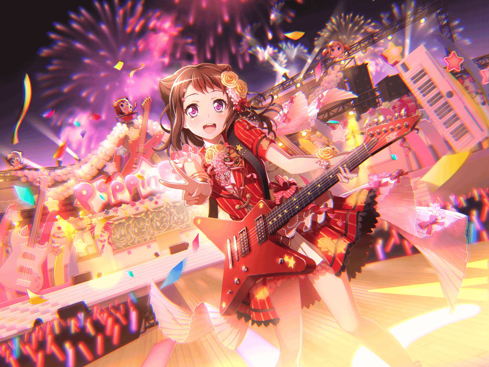

香澄
{{userName}}さーん♪
香澄
なにしてるの？ 買い物？
香澄
同じだぁ♪
私も買い物中だよ！
香澄
せっかくだから一緒に行こーよ！
香澄
わーい！ けってーい！
香澄
今日は何買いに行くの～？
香澄
私はね、ノート！
でも、お腹すいたからなにか食べようかな～？
香澄
ここの商店街ってね、
おいしーものがたっくさんあるんだよ！
香澄
歩いてるだけでも楽しくなってきちゃうよねっ
香澄
あっちのお店を見て～、こっちのお店も見る！
香澄
いろんなお店があるから、ついつい寄り道しちゃうんだ～
香澄
えっ？
どんなお店に行くのって？
香澄
えっとねー
香澄
たとえば、あのお店！！
香澄
お肉屋さん♪
香澄
ここのコロッケ、私好き！
美味しいからつい食べ過ぎちゃう～！
香澄
あっちゃん……妹はね、３個くらいペロって食べるよ！
それくらいおいしいんだ！
香澄
次はね～
香澄
やまぶきベーカリー！
香澄
さーやのおうちのパン！
私のおすすめはクリームパン♪
香澄
あなたは食べたことある？
香澄
一回食べてみて～！
おいしくてびっくりしちゃうよー！
香澄
りみりんはチョココロネがすきなの！
いつも買ってるんだってー！
香澄
ときどき、私もおすそ分けしてもらうんだ～
香澄
チョコがとろっとろで、パンがふわっふわなの！
食べると、しあわせー！ ってなるよ♪
香澄
有咲がすきなものは知ってる？
香澄
有咲はね、盆栽が好きなの！
名前つけて可愛がってるんだよー
香澄
触らせてーっていうと、ダメって言われちゃうけど……
それくらい大事にしてるの！
香澄
あっ！
そういえばこの前ね、
さーやとりみりんの三人で遊園地に行ったんだ♪
香澄
遊びにじゃないよ？
ちゃんと理由があって行ったの！
香澄
ふっふっふ、なんでしょー？
香澄
正解は、
新しい曲の歌詞を考えるためでした～！
香澄
いつもと違う場所に行ったら、いい歌詞が思いつくかも！
よしっ、遊園地に行こー！！
香澄
って、思ったんだ～
香澄
それでねっ、最初にジェットコースターに乗ったんだよ！
香澄
もう、ね！
バビューンって急降下したり、
ぐわあ～んって上がったりするの！
香澄
ちょっと怖かったけど、楽しかったぁ！
香澄
あとは、メリーゴーランド～。
私は馬に乗ったんだ！
香澄
さーやとりみりんは、二人乗りの馬車にのってた！
写真すっごい録ったよ！
香澄
そのあとお化け屋敷に入ろうって言ったんだけど、
りみりんが恐がっちゃてむりだったんだ～
香澄
一緒に入れば大丈夫だって言ったんだけどね～。
私がりみりんをオバケから守ってあげるのに♪
香澄
……えっ？
歌詞？
香澄
大丈夫！
ちゃんと、いい歌詞思いついたよ！
香澄
どんなのか知りたい？ 知りたいよねっ！
香澄
じゃあ今ちょっと歌って――
あ、今度でいい？ そっかぁ
香澄
ところで、
あなたは？
香澄
遊園地では何乗るの？
どれが一番好き？
香澄
観覧車とか？
高いところとかすき？
香澄
ジェットコースターもすきなの？
香澄
うーん……じゃあ
次は{{userName}}さんも一緒に遊園地行こっ！
香澄
どれが一番好きか、乗って考えよー！
香澄
ふふっ、約束だよ？
香澄
これからもっと、
あなたのこと知っていけたらうれしいな♪